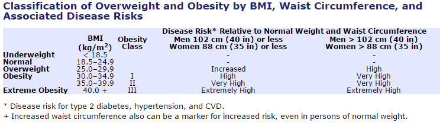

Understanding your current health state to improve it
Author: THemby
Last Update: October 23, 2014
Body mass index (BMI) is a number calculated from your height and weight. Research has shown that correlates to body fat. By understanding your BMI it is possible to know if you are at risk for certain diseases. While this is not a diagnostic tool it can and should prompt changes in lifestyle or a discussion with a healthcare provider.
While BMI is not always a perfect indicator of health status, i.e. women will tend to have higher body fat than men, it is a starting point.
Citations:
Centers for Disease Control and Prevention (CDC)
http://www.cdc.gov/healthyweight/assessing/bmi/adult_bmi/index.html
National Institute for Health (NIH)
http://www.nhlbi.nih.gov/health/educational/lose_wt/BMI/bmi_dis.htm
To access the app go to: http://themby528.shinyapps.io/GetHealthy
The user will go to the website and provide their weight (in pounds), height (in feet and inches), sex, and wait size (selection dependent on sex). The app will then provide the user with their BMI, weight status,and disease risk. All and tables have been pulled from the Centers for Disease Control and Prevention (CDC) and National institute for Health (NIH).
The app works by taking a users information and applying to the standard BMI calculation as see below:
\[ \begin{aligned} BMI = \frac {weight (lb)}{(height (ft)*12 + height(in))^2} * 703 \end{aligned} \]
The results is then compared to a table for classification of Overweight and obesity 
Consider a person with the following information
Her results would be